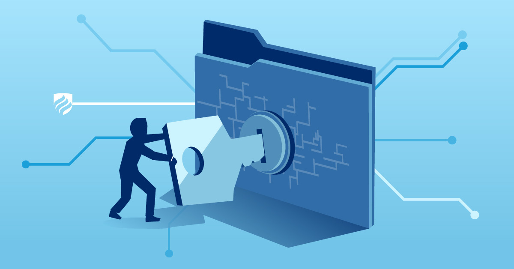

Information Security
Another extremely important cybersecurity strategy. This one focuses more on protecting data from unauthorised acess, use, disclosure, disruption, or destruction. It's closely related to data security which is another concept focused on protecting data stored in systems/databases or transmitted across other networks such as health records, financial data, and intellectual property.
Key Practices in Information Security
There are quite a few practices that can be relied on to keep up this method of protection. Firstly, data encryption, which involves protecting files and communications. Next is access control, only authorised users can see/edit data. Backups and disaster recovery plan implementation is also a major concept and finally strong authentication (passwords and MFA).
Why does it Matter?
- Prevents identity theft and fraud
- Protects sensitive business and/or government data
- Reduces the risk of financial loss or legal issues
- Ensures trust between organisations and users
- Maintains compliance with laws/regulations such as GDPR
- Protects both personal privacy and national security